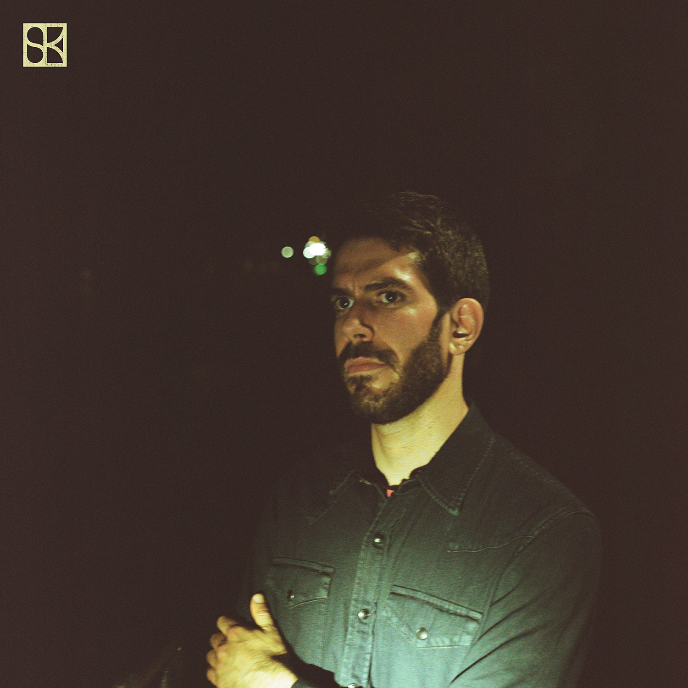
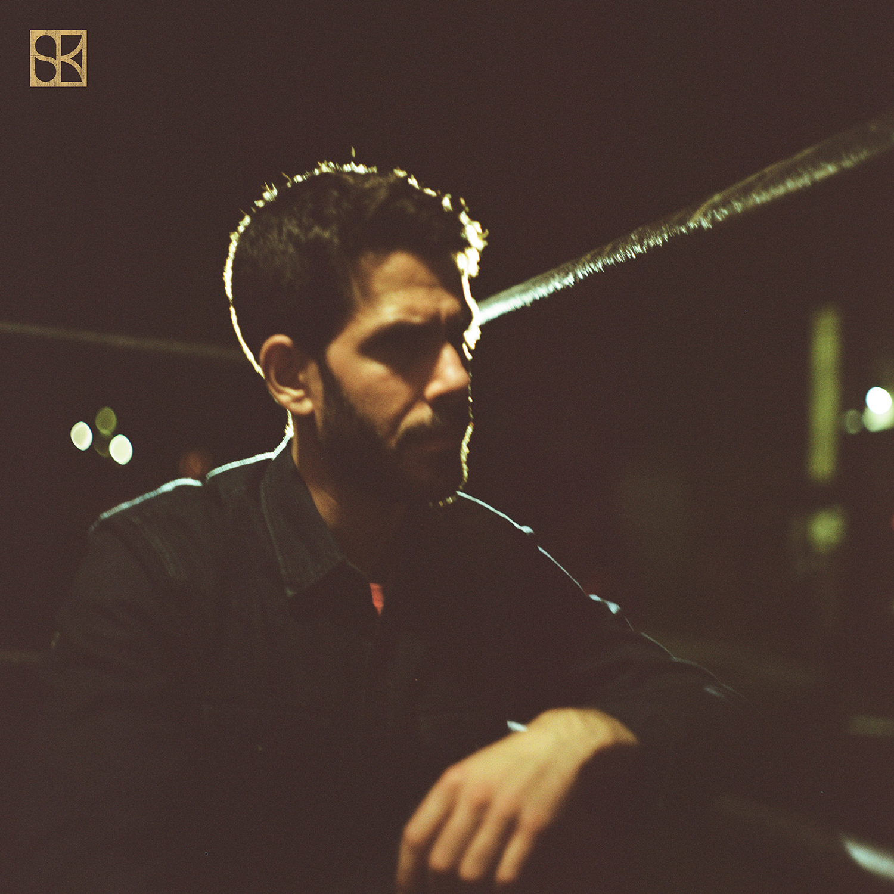
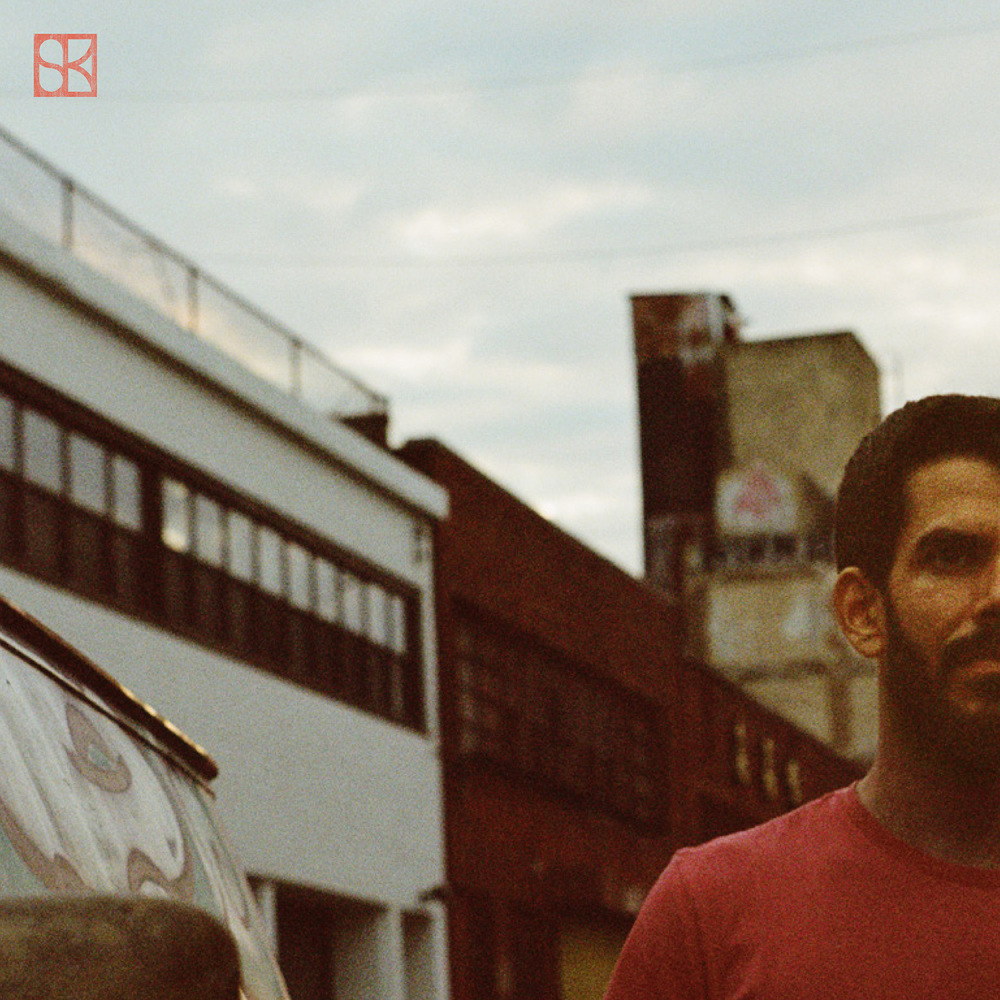

Brooklyn singer-songwriter. Tunes about refractive crystals, tall dogs, and allergenic snails.
Releases

Third of July

Other Lives

Long Game
Dolores Park
[Scott] sings cooly about the somewhat fickle nature of the songwriting process, where gains are sometimes subtle, and definitely ebb and flow. No matter, though, as he shrugs it off with a casual “that’s okay.”
-Tom Gallo, Look at My Records!
Listen to the Iceland Spar singles now
Follow Scott Kodi to hear "Long Game," "Other Lives," and more